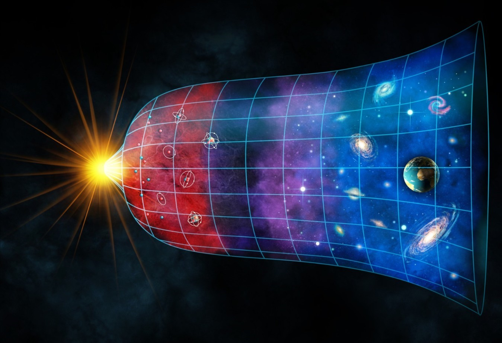

The beginning of the universe
14 billion years ago the universe emerged from nothing and for an unknown purpose. At first it was much smaller than the atom, infinitely smaller. It then expanded to a trillion miles in one second. This event is called the Big Bang.
Time began when the universe was created, so the question of "what was happening before" does not make sense. The big bang was not even an explosion in the space of matter, but rather an expansion of space itself.
From the beginning the universe consisted of pure energy;
But in one millionth of a minute, part of the energy is converted from matter to form a huge collection of subatromic particles (particles that are smaller than an atom).
the biginning of the universe
Energy is converted into particles
Protons and neutrons appear
Stars are formed in space
The first galaxies are formed
The solar system is formed